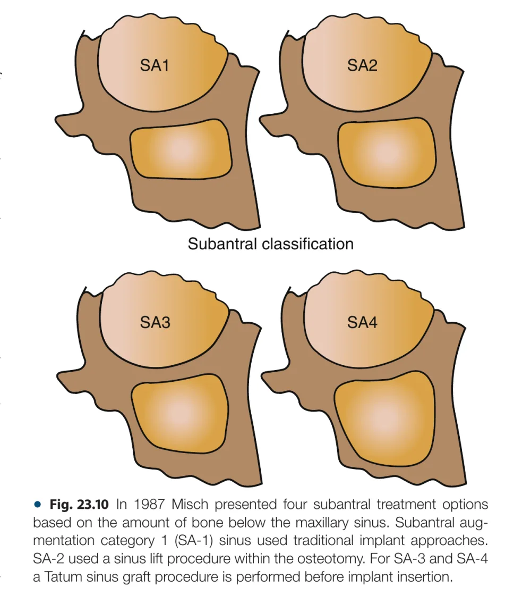
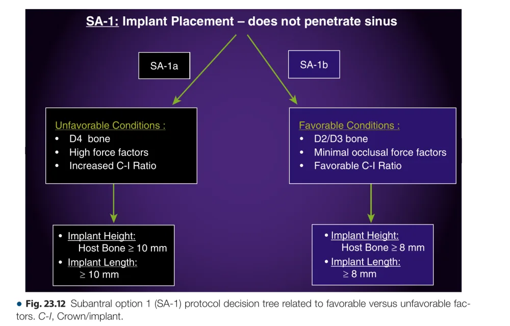

نسخه استخراجشده؛ ترجمه یا تأیید علمی انجام نشده است. وضعیت: captured
«در سال ۱۹۸۷ میش چهار گزینهی درمان سابآنترال را بر پایهی مقدار استخوان زیر سینوس ماگزیلا ارائه کرد.» و این دستگاه امروز طبقهبندی خلفی ماگزیلای میشـرزنیک نامیده میشود.
SA-1 سادهترین حالت است: جایگذاری ایمپلنت — بدون نفوذ به سینوس.
و اکنون بخشی که باید با دقت بخوانی — چون یک درخت تصمیم دوشاخه است، نه یک عدد واحد:
SA-1 دو زیرگروه دارد، و آنچه آنها را از هم جدا میکند، «شرایط» است نه ارتفاع استخوان.
SA-1b — شرایط مساعد:
• استخوان D2 یا D3
• عوامل نیروی اکلوزالی حداقلی
• نسبت تاج به ایمپلنت (C-I) مساعد
در این حالت: استخوان میزبان ۸ میلیمتر یا بیشتر، طول ایمپلنت ۸ میلیمتر یا بیشتر
SA-1a — شرایط نامساعد:
• استخوان D4
• عوامل نیروی بالا
• نسبت تاج به ایمپلنت افزایشیافته
در این حالت: استخوان میزبان ۱۰ میلیمتر یا بیشتر، طول ایمپلنت ۱۰ میلیمتر یا بیشتر
حالا به منطق این درخت نگاه کن — و این مهمترین نکتهی این درس است:
همان ارتفاع ۹ میلیمتری، در یک بیمار SA-1 است و در بیمار دیگر نیست.
اگر بیمار استخوان D2 و نیروی کم دارد، ۹ میلیمتر کافی است و میتوانی ایمپلنت بگذاری. اگر بیمار D4 و براکسر است، همان ۹ میلیمتر کافی نیست و باید به SA-2 یا SA-3 بروی.
یعنی طبقهبندی سابآنترال یک طبقهبندی صرفاً آناتومیک نیست؛ یک طبقهبندی آناتومیکـبیومکانیکی است.
و این همان الگویی است که در کل مسیر دیدهای: عوامل نیرو شمار ایمپلنت را بالا میبرند و تراکم استخوان پروتکل را عوض میکند. اینجا هر دو با هم، مرز یک دستهی درمانی را جابهجا میکنند.
و نکتهی «نسبت تاج به ایمپلنت» را دستکم نگیر — این نسبت با همان CHS گره خورده که پیشتر بهعنوان کانتیلور عمودی شناختی. و در ماگزیلای خلفی، هرچه ارتفاع استخوان کمتر باشد، این نسبت بدتر میشود — پس دو معیار همبستهاند و با هم بدتر میشوند.

SA-2 وقتی انتخاب میشود که «حداقل ۶ یا ۸ میلیمتر استخوان عمودی موجود باشد» — ۶ میلیمتر در شرایط مساعد و ۸ میلیمتر در شرایط نامساعد.
و تکنیکش: «در تکنیک SA-2، کف سینوس از طریق استئوتومی ایمپلنت بهاندازهی ۱ تا ۲ میلیمتر بالا برده میشود.»
تاریخچهاش هم آموزنده است: این تکنیک در اصل در ۱۹۷۰ توسعه یافت، در ۱۹۸۷ منتشر شد، و سالها بعد در ۱۹۹۴ با نام تکنیک استئوتوم دوباره معرفی شد.
و اکنون جزئیات تکنیک — که هر عددش دلیل دارد:
گام یکم: «عمق استئوتومی تقریباً ۱ تا ۲ میلیمتر کوتاهتر از کف آنتروم آماده میشود.»
گام دوم — انتخاب ابزار: «یک استئوتوم فنجانیشکل با همان قطر (یا اندکی کوچکتر از) استئوتومی نهایی انتخاب میشود.»
و یک هشدار ابزاری: «این از نظر شکل انتهایی با استئوتومهایی که برای گسترش استخوان به کار میروند تفاوت دارد.» — یعنی استئوتوم گسترش استخوان را برای این کار به کار نبر.
گام سوم — حرکت: «استئوتوم وارد میشود و محکم در افزایشهای ۰٫۵ تا ۱ میلیمتری فراتر از استئوتومی کوبیده میشود تا به موقعیت نهایی خود، تا ۲ میلیمتر فراتر از استئوتومی آمادهشدهی ایمپلنت، برسد.»
و آنچه رخ میدهد: «این رویکرد جراحی یک شکستگی از نوع ترکهی سبز در کف آنترال ایجاد میکند و استخوان آمادهنشده و غشای سینوس را بهآرامی روی استئوتوم پهنپایه بالا میبرد.»
عبارت «شکستگی ترکهی سبز» را نگه دار. هدف شکستن کامل نیست؛ خم کردن است — تا صفحهی استخوانی بهعنوان یک واحد بالا برود و غشا را پاره نکند.
گام چهارم — جایگذاری: «ایمپلنت بهآرامی به موقعیت پیچانده میشود تا غشا کمتر احتمال پارگی داشته باشد در حالی که بالا میرود.»
«بهآرامی» یک قید تکنیکی است، نه یک توصیهی کلی.
و نتیجهی نهایی: «ایمپلنت ممکن است بهطور ایدهآل تا ۲ میلیمتر فراتر از کف سینوس امتداد یابد، و پوشش استخوانی ۱ تا ۲ میلیمتری روی آپکس ممکن است به بالا رفتن مخاط سینوس تا ۳ میلیمتر بینجامد.»
پس ۲ میلیمتر ایمپلنت بهعلاوهی پوشش استخوانی، جمعاً تا ۳ میلیمتر بالا رفتن مخاط. این سقف واقعی SA-2 است.
و اکنون چرا این تکنیک کار میکند — یک دلیل زیستی زیبا:
«بهدلیل وجود استخوان اتولوگ بالای بخش آپیکال ایمپلنت، همراه با غشای سینوس که غنی از سلولهای استئوپروژنیتور است، تشکیل استخوان تازه تسریع میشود.»
یعنی غشای سینوس تنها یک مانع نیست؛ یک منبع سلولی است. و همین است که SA-2 را از یک «فشار مکانیکی ساده» به یک روش بازساختی تبدیل میکند.
و دو هشدار که باید بدانی:
هشدار یکم — عدم قطعیت: «موفقیت بالا بردن سالم غشای سینوس نمیتواند پیش از جایگذاری ایمپلنت یا در زمان آن تأیید شود.»
این جمله را جدی بگیر. در SA-2، تو کورکورانه کار میکنی — و این ذاتی تکنیک است، نه نقص مهارت.
هشدار دوم — و این خطای وسوسهانگیزی است که باید از آن پرهیز کنی:
«تلاش برای حس کردن بالا رفتن غشا از درون یک استئوتومی ۸ میلیمتری با قطر تقریباً ۳ میلیمتر، ممکن است بهآسانی باعث جدا شدن آستر سینوس شود.»
یعنی خودِ عملِ بررسی کردن، همان چیزی را خراب میکند که میخواستی بررسی کنی. پس در SA-2، عدم قطعیت را بپذیر و کاوش نکن.
و اگر نتیجه مطلوب نبود؟ راهحل هم وجود دارد: «اگر پس از ترمیم اولیه استخوان کافی اطراف بخش آپیکال ایمپلنت تشکیل نشود، پروتکل بارگذاری تدریجی برای استخوان D4 پیشنهاد میشود.»
و درمان پروتزی بیمار «مشابه دستهی SA-1 پیش میرود.»
